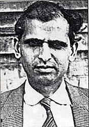
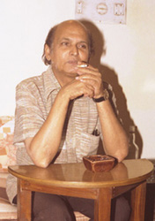
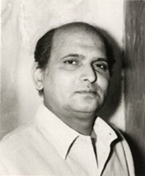

| INTIZAR HUSAIN is among the major Urdu fiction writers of Pakistan and has been the recipient of numerous literary awards. He has published six collections of short stories and four novels. He lives in Lahore and is a columnist for the English-language newspaper Dawn (Karachi). He was born in 1925 in Dibai (India). |
|  |  |  |
PHOTO BY M.U. MEMON, 1985 |